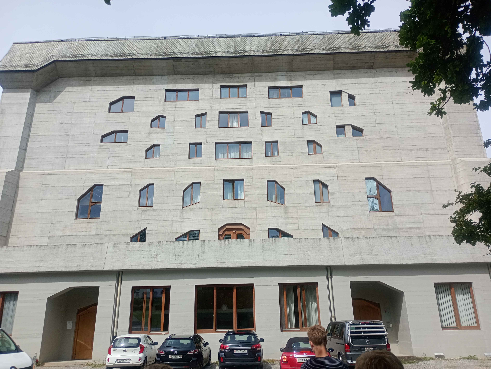
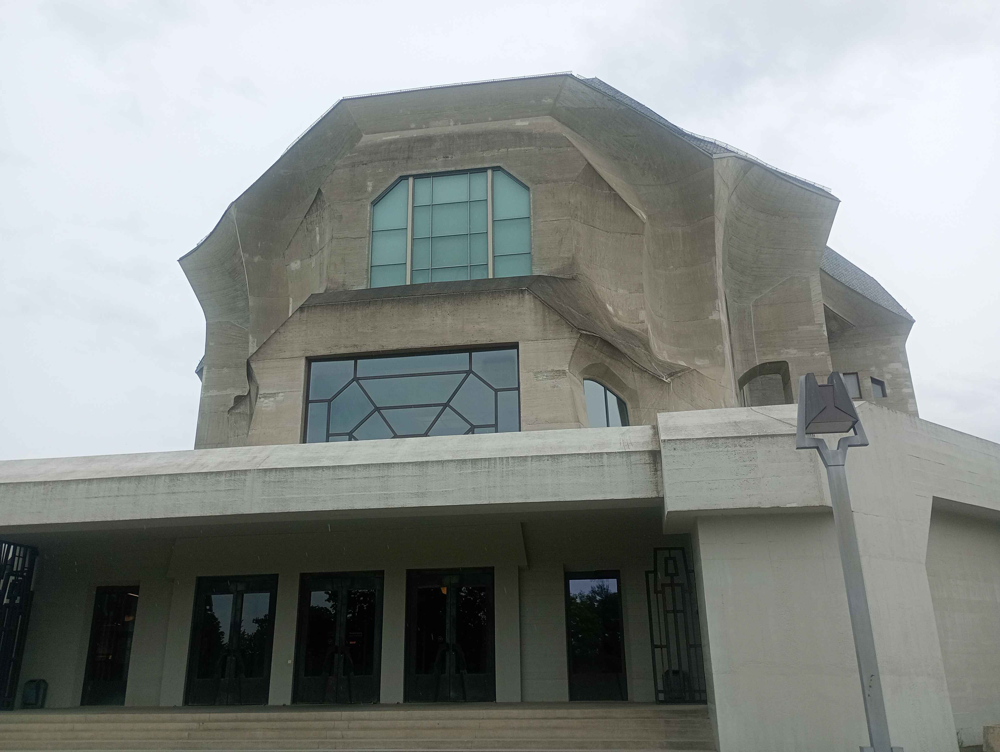
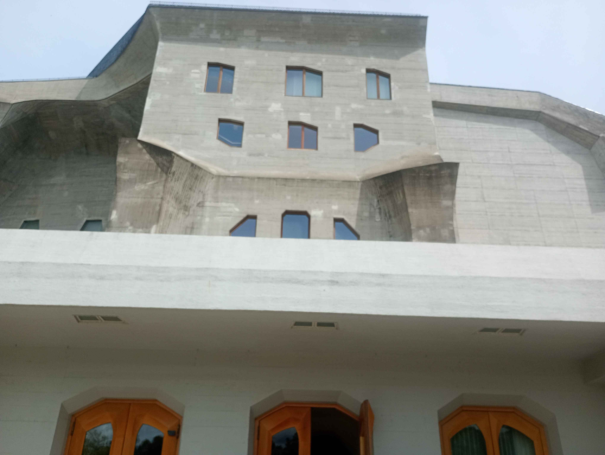
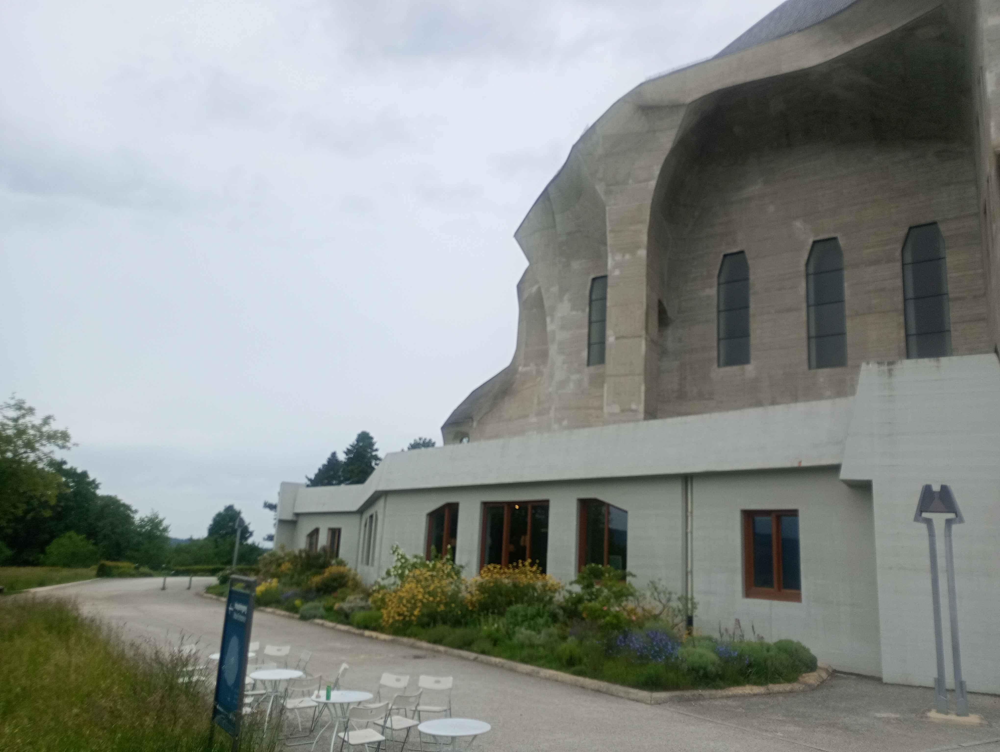
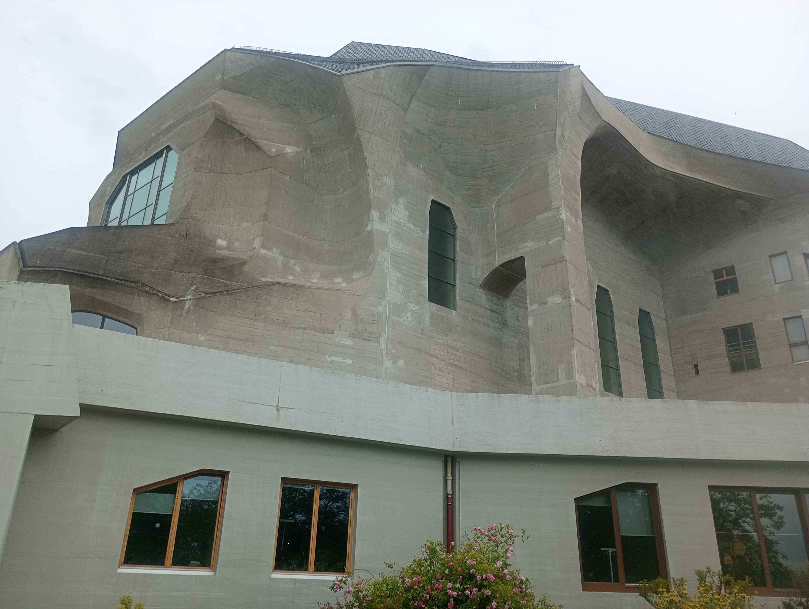

Basel, Schweitz
Goetheanum (1928) blev bygget af Rudolf Steiner efter den første version af Goetheanum brændte ned nytårsaften 1922.
Steiners filosofi om antroposofi fik ham til at tro at den beton der bruges til at skabe en bygning skulle formes som om det var gjort i hånden. Det signalerede fremtiden for bæredygtige og modstandsdygtige betonbygninger, og det står som et bevist punkt i nutidens arkitektur.

Bygningen i sig selv er et symmetrisk stykke med en enorm variation af overflader der er formet som kurver, linjer og andre ukonventionelle organiske former overalt i strukturen. I sig selv virker bygningen abstrakt, men på indersiden var den tydeligvis lavet til at være effektiv fra det centrale 'knudepunkt' til at gennemkrydse til hvert hjørne af bygningen.



